# ============================================================
# FLU 2009 H1N1 + EBOLA SIERRA LEONE 2014
# Full analysis using estimate_R_blocks() (odin2 → dust2 → monty)
# ============================================================
rm(list = ls())
library(dust2); library(monty); library(odin2)
library(ggplot2); library(EpiEstim)
library(dplyr); library(outbreaks); library(patchwork); library(devtools)
Attaching package: 'dplyr'The following objects are masked from 'package:stats':
filter, lagThe following objects are masked from 'package:base':
intersect, setdiff, setequal, unionLoading required package: usethisset.seed(444)
load_all()ℹ Loading rodentWarning: Objects listed as exports, but not present in namespace:
• final_estimate_Rt_step# ============================================================
# SHARED HELPER FUNCTIONS
# ============================================================
# --- S(t) trajectory plot ---
plot_S_trajectory <- function(out, N, title_label = "") {
df <- out$S_quantiles
ggplot(df, aes(x = time)) +
geom_ribbon(aes(ymin = lwr, ymax = upr),
fill = "#56B4E9", alpha = 0.3) +
geom_line(aes(y = median), colour = "#56B4E9", linewidth = 1.1) +
labs(
x = "Time (days)",
y = "S(t) — susceptible individuals",
title = paste0(title_label, " — Posterior S(t)"),
subtitle = paste0("Posterior median and 95% CI, N = ",
format(N, big.mark = ","))
) +
theme_minimal(base_size = 13)
}
# --- Smooth Rt(t) plot ---
plot_Rt <- function(out, title_label = "Rt(t)", vlines = NULL) {
df <- out$Rt_quantiles
p <- ggplot(df, aes(x = time)) +
geom_ribbon(aes(ymin = lwr, ymax = upr),
fill = "#0072B2", alpha = 0.25) +
geom_line(aes(y = median), colour = "#0072B2", linewidth = 1.1) +
geom_hline(yintercept = 1, linetype = 2, colour = "red") +
labs(x = "Time (days)", y = "Rt",
title = title_label,
subtitle = "Posterior median and 95% CI") +
theme_minimal(base_size = 13)
if (!is.null(vlines))
p <- p + geom_vline(xintercept = vlines, linetype = "dotted",
color = "darkgrey", linewidth = 0.7)
p
}
# --- Block Rt from Rt_mat ---
block_Rt <- function(Rt_mat, beta_times, time_vec) {
K <- length(beta_times)
out <- data.frame()
for (k in seq_len(K)) {
t_start <- beta_times[k]
t_end <- if (k < K) beta_times[k + 1] - 1 else max(time_vec)
idx <- which(time_vec >= t_start & time_vec <= t_end)
block_draws <- Rt_mat[idx, , drop = FALSE]
out <- rbind(out, data.frame(
t_start = t_start,
t_end = t_end,
Mean = mean(block_draws),
Lower = quantile(block_draws, 0.025),
Upper = quantile(block_draws, 0.975)
))
}
out
}
# --- Block Rt plot ---
plot_block_Rt <- function(df_blocks, title_label = "", vlines = NULL) {
p <- ggplot(df_blocks) +
geom_rect(aes(xmin = t_start, xmax = t_end, ymin = Lower, ymax = Upper),
fill = "#0072B2", alpha = 0.25, color = NA) +
geom_segment(aes(x = t_start, xend = t_end, y = Mean, yend = Mean),
color = "#0072B2", linewidth = 1.2) +
geom_hline(yintercept = 1, linetype = 2, color = "red") +
labs(x = "Time (days)", y = "Rt",
title = paste0(title_label, " — rodent: Block Rt"),
subtitle = "Mean and 95% CI per block") +
theme_minimal(base_size = 13)
if (!is.null(vlines))
p <- p + geom_vline(xintercept = vlines, linetype = "dotted",
color = "darkgrey", linewidth = 0.7)
p
}
# --- beta(t) block plot from Rt_mat / beta_t_mat ---
plot_beta_blocks <- function(out, vlines = NULL, title_label = "") {
beta_mat <- out$beta_t_mat
bt <- out$beta_times
time_vec <- out$Rt_quantiles$time
K <- length(bt)
rows <- lapply(seq_len(K), function(k) {
t_start <- bt[k]
t_end <- if (k < K) bt[k + 1] - 1 else max(time_vec)
idx <- which(time_vec >= t_start & time_vec <= t_end)
draws <- beta_mat[idx, , drop = FALSE]
data.frame(
t_start = t_start,
t_end = t_end,
median = median(draws),
lower = quantile(draws, 0.025),
upper = quantile(draws, 0.975)
)
})
df <- do.call(rbind, rows)
p <- ggplot(df) +
geom_rect(aes(xmin = t_start, xmax = t_end, ymin = lower, ymax = upper),
fill = "#6A51A3", alpha = 0.15, color = NA) +
geom_segment(aes(x = t_start, xend = t_end, y = median, yend = median),
color = "#6A51A3", linewidth = 0.9, lineend = "butt") +
labs(x = "Time (days)", y = expression(beta(t)),
title = paste0(title_label, " — rodent: β(t) blockwise"),
subtitle = "Posterior median and 95% CI by block") +
theme_minimal(base_size = 13) +
theme(panel.grid = element_blank())
if (!is.null(vlines))
p <- p + geom_vline(xintercept = vlines, linetype = "dotted",
color = "darkgrey", linewidth = 0.6)
p
}
# --- rodent vs EpiEstim comparison plot ---
make_comparison_plot <- function(df_epi, df_rod, vlines = NULL,
title_label = "") {
span <- max(df_rod$t_end) - min(df_rod$t_start)
df <- bind_rows(
df_epi %>% mutate(method = "EpiEstim"),
df_rod %>% mutate(method = "rodent")
) %>%
mutate(
x_start = ifelse(method == "rodent",
t_start + 0.02 * span, t_start - 0.02 * span),
x_end = ifelse(method == "rodent",
t_end + 0.02 * span, t_end - 0.02 * span)
)
p <- ggplot(df) +
geom_rect(aes(xmin = x_start, xmax = x_end,
ymin = Lower, ymax = Upper, fill = method),
alpha = 0.3, color = NA) +
geom_segment(aes(x = x_start, xend = x_end,
y = Mean, yend = Mean, color = method),
linewidth = 1.2) +
geom_hline(yintercept = 1, linetype = 2, color = "black") +
scale_fill_manual(values = c("EpiEstim" = "#E69F00",
"rodent" = "#0072B2")) +
scale_color_manual(values = c("EpiEstim" = "#E69F00",
"rodent" = "#0072B2")) +
labs(x = "Time (days)", y = "Rt",
title = paste0(title_label, " — Block Rt comparison"),
subtitle = "Orange = EpiEstim, Blue = rodent",
fill = NULL, color = NULL) +
theme_minimal(base_size = 13) +
theme(legend.position = "bottom")
if (!is.null(vlines))
p <- p + geom_vline(xintercept = vlines, linetype = "dotted",
color = "darkgrey", linewidth = 0.6)
p
}
# --- numeric summary printer ---
print_Rt_comparison <- function(df_epi, df_rod, label = "") {
cat("\n=====", label, "— Rt COMPARISON =====\n\n")
for (i in seq_len(nrow(df_epi))) {
cat(sprintf("Block %d (days %d-%d):\n", i,
df_epi$t_start[i], df_epi$t_end[i]))
cat(sprintf(" EpiEstim : %.2f [%.2f, %.2f]\n",
df_epi$Mean[i], df_epi$Lower[i], df_epi$Upper[i]))
cat(sprintf(" rodent : %.2f [%.2f, %.2f]\n\n",
df_rod$Mean[i], df_rod$Lower[i], df_rod$Upper[i]))
}
}
# ============================================================
# DATASET 1: FLU 2009 H1N1
# ============================================================
data(Flu2009)
flu_daily <- Flu2009$incidence %>%
mutate(time = row_number()) %>%
rename(cases = I) %>%
select(time, cases) %>%
as.data.frame()
flu_vlines <- c(8, 18, 25)
Tmax_flu <- nrow(flu_daily)
cat("=== FLU 2009 H1N1 ===\n")=== FLU 2009 H1N1 ===cat("Total cases:", sum(flu_daily$cases), "\n")Total cases: 129 cat("Peak daily cases:", max(flu_daily$cases), "\n")Peak daily cases: 13 cat("Day of peak:", which.max(flu_daily$cases), "\n")Day of peak: 13 cat("Total days:", Tmax_flu, "\n\n")Total days: 32 # --- Fit rodent ---
flu_out <- estimate_R_blocks(
data = flu_daily,
N = 369,
gamma = 1 / 2.6,
beta_breaks = c(1, 8, 18, 25),
priors = list(mean_beta = log(0.5), sd_beta = 1.0,
rw_sd_beta = 0.3, mean_I0 = log(5), sd_I0 = 0.5),
inits = list(beta = 0.5, I0 = 5),
mcmc = list(n_steps = 15000, burnin = 0.5, seed = 444, n_chains = 3)
)✔ Wrote 'DESCRIPTION'✔ Wrote 'NAMESPACE'✔ Wrote 'R/dust.R'✔ Wrote 'src/dust.cpp'✔ Wrote 'src/Makevars'ℹ 27 functions decorated with [[cpp11::register]]✔ generated file 'cpp11.R'✔ generated file 'cpp11.cpp'ℹ Re-compiling odin.systemb3786296── R CMD INSTALL ───────────────────────────────────────────────────────────────
* installing *source* package 'odin.systemb3786296' ...
** this is package 'odin.systemb3786296' version '0.0.1'
** using staged installation
** libs
using C++ compiler: 'G__~1.EXE (GCC) 14.2.0'
g++ -std=gnu++17 -I"C:/PROGRA~1/R/R-45~1.2/include" -DNDEBUG -I'C:/Users/mjh25/AppData/Local/R/win-library/4.5/cpp11/include' -I'C:/Users/mjh25/AppData/Local/R/win-library/4.5/dust2/include' -I'C:/Users/mjh25/AppData/Local/R/win-library/4.5/monty/include' -I"C:/rtools45/x86_64-w64-mingw32.static.posix/include" -DHAVE_INLINE -fopenmp -O2 -Wall -mfpmath=sse -msse2 -mstackrealign -Wall -pedantic -c cpp11.cpp -o cpp11.o
g++ -std=gnu++17 -I"C:/PROGRA~1/R/R-45~1.2/include" -DNDEBUG -I'C:/Users/mjh25/AppData/Local/R/win-library/4.5/cpp11/include' -I'C:/Users/mjh25/AppData/Local/R/win-library/4.5/dust2/include' -I'C:/Users/mjh25/AppData/Local/R/win-library/4.5/monty/include' -I"C:/rtools45/x86_64-w64-mingw32.static.posix/include" -DHAVE_INLINE -fopenmp -O2 -Wall -mfpmath=sse -msse2 -mstackrealign -Wall -pedantic -c dust.cpp -o dust.o
g++ -std=gnu++17 -shared -s -static-libgcc -o odin.systemb3786296.dll tmp.def cpp11.o dust.o -fopenmp -LC:/rtools45/x86_64-w64-mingw32.static.posix/lib/x64 -LC:/rtools45/x86_64-w64-mingw32.static.posix/lib -LC:/PROGRA~1/R/R-45~1.2/bin/x64 -lR
installing to C:/Users/mjh25/AppData/Local/Temp/RtmpIRyHAH/devtools_install_2ca463533c00/00LOCK-dust_2ca465243ad1/00new/odin.systemb3786296/libs/x64
* DONE (odin.systemb3786296)ℹ Loading odin.systemb3786296⡀⠀ Sampling [▁▁▁] ■ | 0% ETA: 6m⠄⠀ Sampling [▂▁▁] ■■■ | 7% ETA: 16s⢂⠀ Sampling [▅▁▁] ■■■■■■■ | 22% ETA: 15s⡂⠀ Sampling [█▁▁] ■■■■■■■■■■■ | 34% ETA: 14s⠅⠀ Sampling [█▄▁] ■■■■■■■■■■■■■■■■ | 51% ETA: 10s⢃⠀ Sampling [█▇▁] ■■■■■■■■■■■■■■■■■■■■ | 64% ETA: 8s⡃⠀ Sampling [██▄] ■■■■■■■■■■■■■■■■■■■■■■■■■■ | 82% ETA: 4s⠍⠀ Sampling [██▇] ■■■■■■■■■■■■■■■■■■■■■■■■■■■■■■ | 98% ETA: 0s✔ Sampled 45000 steps across 3 chains in 19.8s# --- rodent outputs ---
flu_blocks <- block_Rt(flu_out$Rt_mat, flu_out$beta_times, flu_daily$time)
# --- EpiEstim ---
flu_epi <- flu_daily %>% rename(I = cases)
res_flu_sliding_7d <- estimate_R(
incid = flu_epi, method = "parametric_si",
config = make_config(list(
mean_si = 2.6, std_si = 1.5,
t_start = seq(2, Tmax_flu - 6),
t_end = seq(2, Tmax_flu - 6) + 6
))
)
res_flu_np <- estimate_R(
incid = flu_epi, method = "non_parametric_si",
config = make_config(si_distr = Flu2009$si_distr)
)Default config will estimate R on weekly sliding windows.
To change this change the t_start and t_end arguments. res_flu_blocks_param <- estimate_R(
incid = flu_epi, method = "parametric_si",
config = make_config(list(
mean_si = 2.6, std_si = 1.5,
t_start = c(2, 8, 18, 25),
t_end = c(7, 17, 24, Tmax_flu)
))
)
res_flu_blocks_np <- estimate_R(
incid = flu_epi, method = "non_parametric_si",
config = make_config(
si_distr = Flu2009$si_distr,
t_start = c(2, 8, 18, 25),
t_end = c(7, 17, 24, Tmax_flu)
)
)
df_epi_flu_param <- res_flu_blocks_param$R %>%
transmute(t_start, t_end, Mean = `Mean(R)`,
Lower = `Quantile.0.025(R)`, Upper = `Quantile.0.975(R)`)
df_epi_flu_np <- res_flu_blocks_np$R %>%
transmute(t_start, t_end, Mean = `Mean(R)`,
Lower = `Quantile.0.025(R)`, Upper = `Quantile.0.975(R)`)
df_rod_flu <- flu_blocks %>%
transmute(t_start, t_end, Mean, Lower, Upper)
# ============================================================
# FLU PLOTS — individual
# ============================================================
# P1: Incidence
p_flu_incid <- ggplot(flu_daily, aes(time, cases)) +
geom_col(fill = "#56B4E9", alpha = 0.8) +
geom_vline(xintercept = flu_vlines, linetype = "dotted",
color = "darkgrey", linewidth = 0.7) +
annotate("text", x = 19, y = max(flu_daily$cases) * 0.93,
label = "School\nclosure", hjust = 0, size = 3, color = "darkgrey") +
labs(x = "Time (days)", y = "Daily cases",
title = "Flu 2009 H1N1 — Daily Incidence",
subtitle = "Pennsylvania school, N = 369") +
theme_minimal(base_size = 13)
print(p_flu_incid)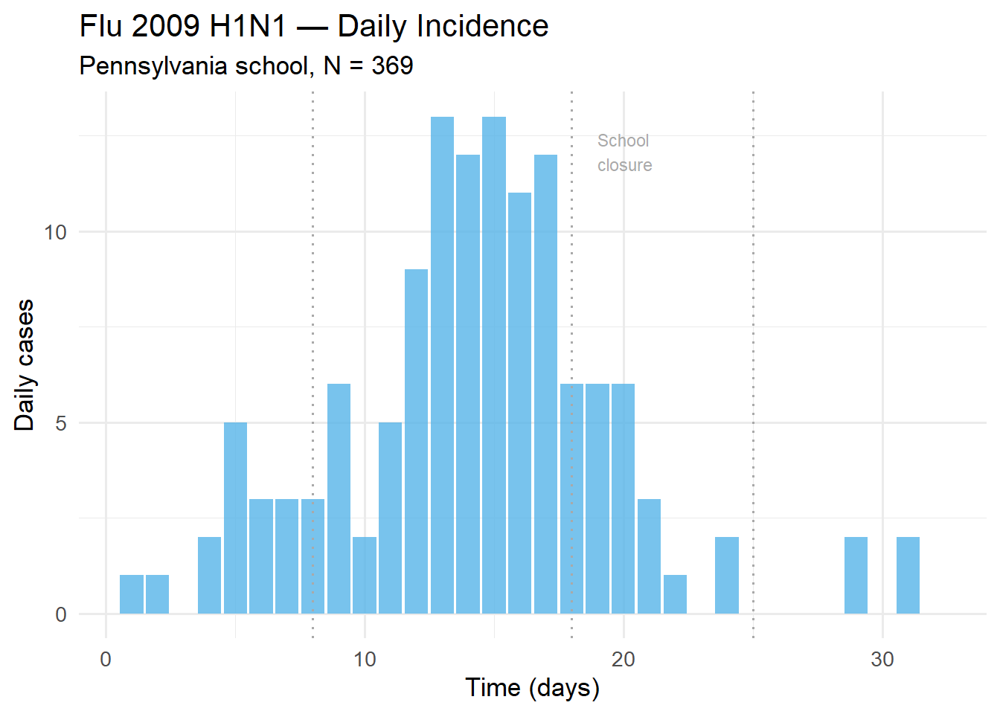
# P2: rodent smooth Rt(t)
p_flu_rt <- plot_Rt(flu_out, "Flu 2009 H1N1 — rodent: Rt(t)", flu_vlines)
print(p_flu_rt)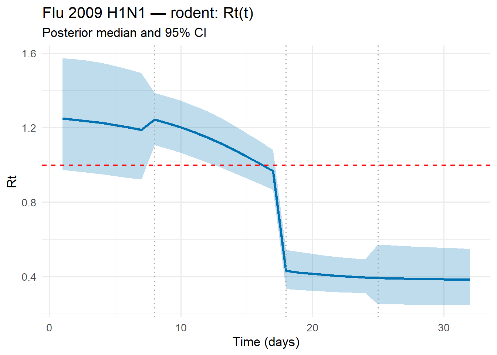
# P3: rodent block Rt
p_flu_blocks <- plot_block_Rt(flu_blocks, "Flu 2009 H1N1", flu_vlines)
print(p_flu_blocks)Warning: Removed 1 row containing missing values or values outside the scale range
(`geom_segment()`).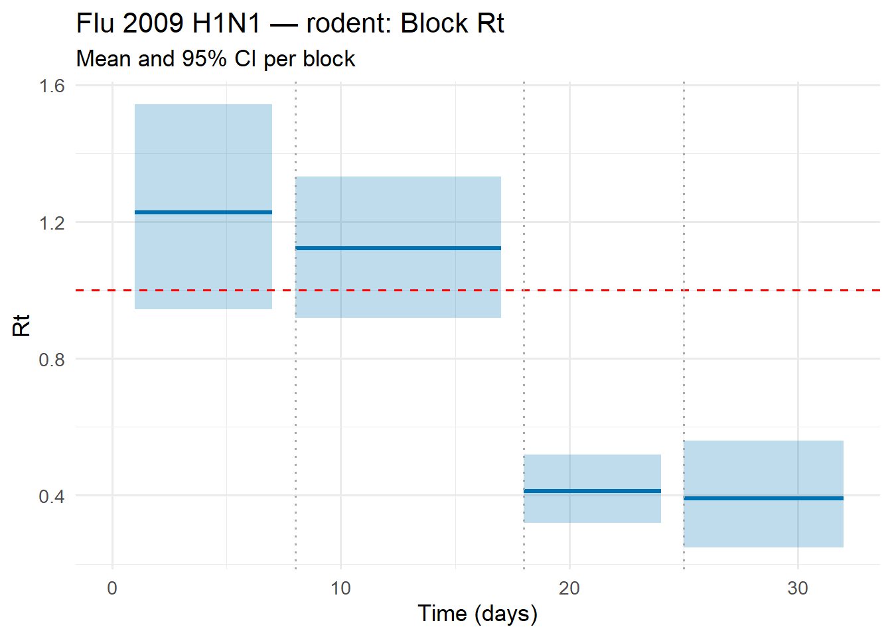
# P4: EpiEstim 7-day sliding (parametric)
p_flu_epi_7d <- plot(res_flu_sliding_7d, "R") +
geom_hline(yintercept = 1, linetype = 2, color = "red") +
geom_vline(xintercept = flu_vlines, linetype = "dotted",
color = "darkgrey", linewidth = 0.7) +
labs(title = "Flu 2009 H1N1 — EpiEstim: 7-day sliding Rt",
subtitle = "Parametric SI: mean = 2.6d, sd = 1.5d") +
theme_minimal(base_size = 13)
print(p_flu_epi_7d)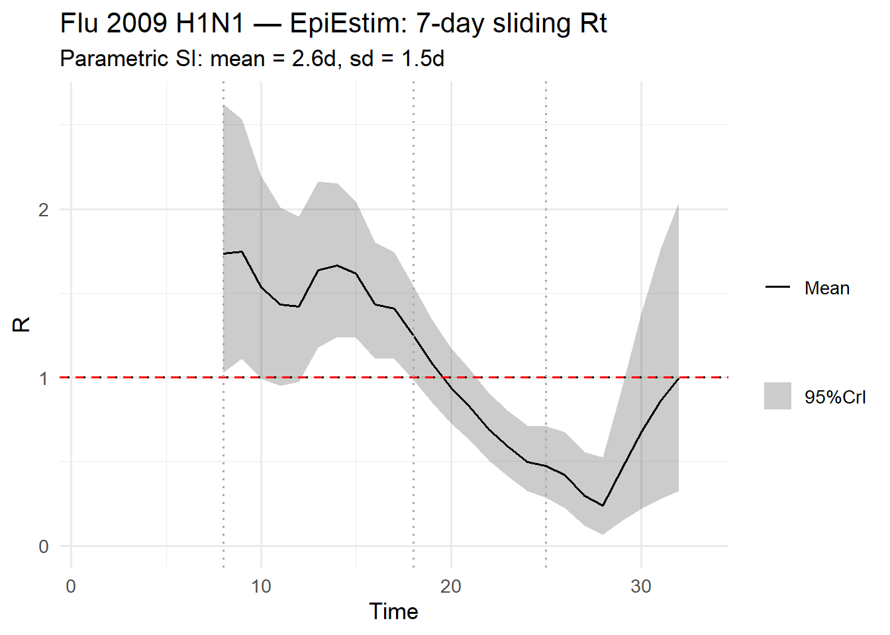
# P5: EpiEstim non-parametric SI (7-day)
p_flu_epi_np <- plot(res_flu_np, "R") +
geom_hline(yintercept = 1, linetype = 2, color = "red") +
geom_vline(xintercept = flu_vlines, linetype = "dotted",
color = "darkgrey", linewidth = 0.7) +
labs(title = "Flu 2009 H1N1 — EpiEstim: non-parametric SI",
subtitle = "Empirical SI distribution from Flu2009$si_distr") +
theme_minimal(base_size = 13)
print(p_flu_epi_np)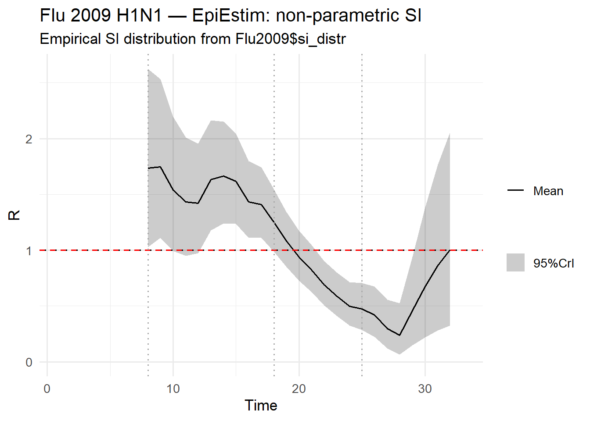
# P6: EpiEstim parametric block windows
p_flu_epi_blocks_param <- plot(res_flu_blocks_param, "R") +
geom_hline(yintercept = 1, linetype = 2, color = "red") +
labs(title = "Flu 2009 H1N1 — EpiEstim: block windows (parametric SI)",
subtitle = "Blocks: days 2-7, 8-17, 18-24, 25-end") +
theme_minimal(base_size = 13)
print(p_flu_epi_blocks_param)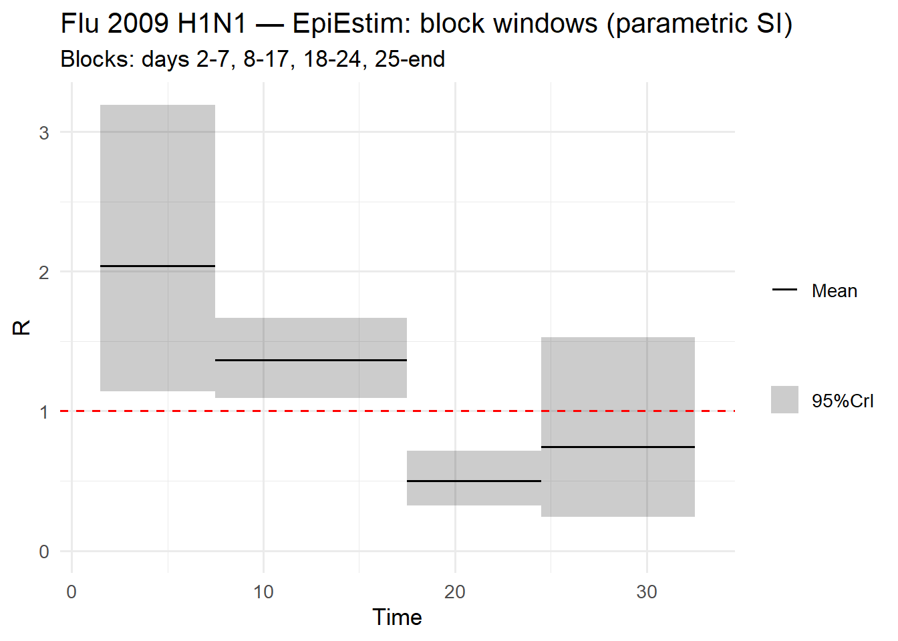
# P7: EpiEstim non-parametric block windows
p_flu_epi_blocks_np <- plot(res_flu_blocks_np, "R") +
geom_hline(yintercept = 1, linetype = 2, color = "red") +
labs(title = "Flu 2009 H1N1 — EpiEstim: block windows (non-parametric SI)",
subtitle = "Blocks: days 2-7, 8-17, 18-24, 25-end") +
theme_minimal(base_size = 13)
print(p_flu_epi_blocks_np)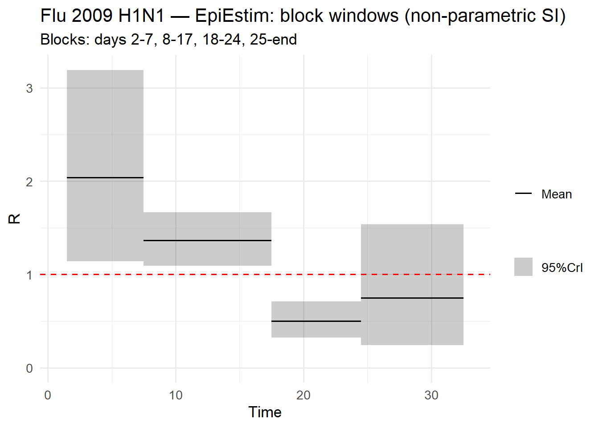
# P8: rodent vs EpiEstim parametric block comparison
p_flu_compare_param <- make_comparison_plot(
df_epi_flu_param, df_rod_flu, flu_vlines,
"Flu 2009 H1N1 (parametric SI)"
)
print(p_flu_compare_param)Warning: Removed 1 row containing missing values or values outside the scale range
(`geom_segment()`).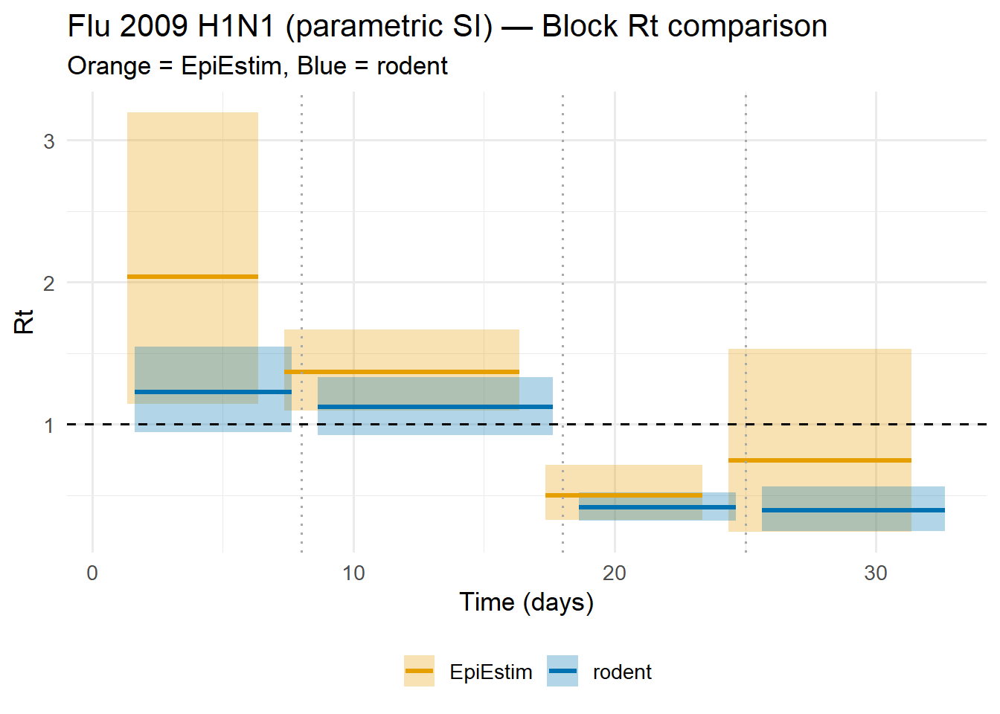
# P9: rodent vs EpiEstim non-parametric block comparison
p_flu_compare_np <- make_comparison_plot(
df_epi_flu_np, df_rod_flu, flu_vlines,
"Flu 2009 H1N1 (non-parametric SI)"
)
print(p_flu_compare_np)Warning: Removed 1 row containing missing values or values outside the scale range
(`geom_segment()`).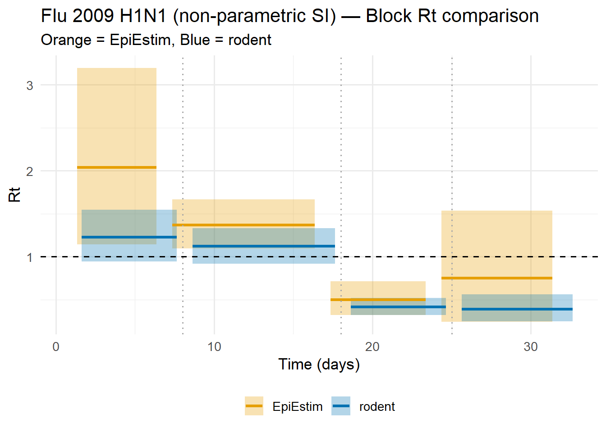
# P10: S(t)
p_flu_S <- plot_S_trajectory(flu_out, N = 369, "Flu 2009 H1N1")
print(p_flu_S)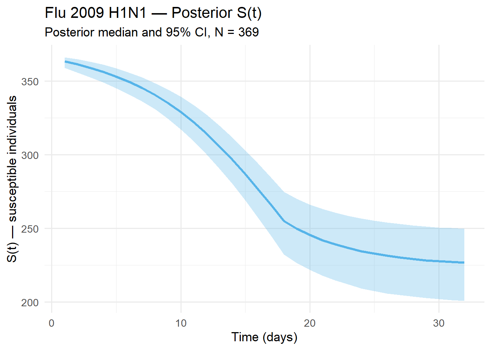
# P11: beta(t) blocks
p_flu_beta <- plot_beta_blocks(flu_out, flu_vlines, "Flu 2009 H1N1")
print(p_flu_beta)Warning: Removed 1 row containing missing values or values outside the scale range
(`geom_segment()`).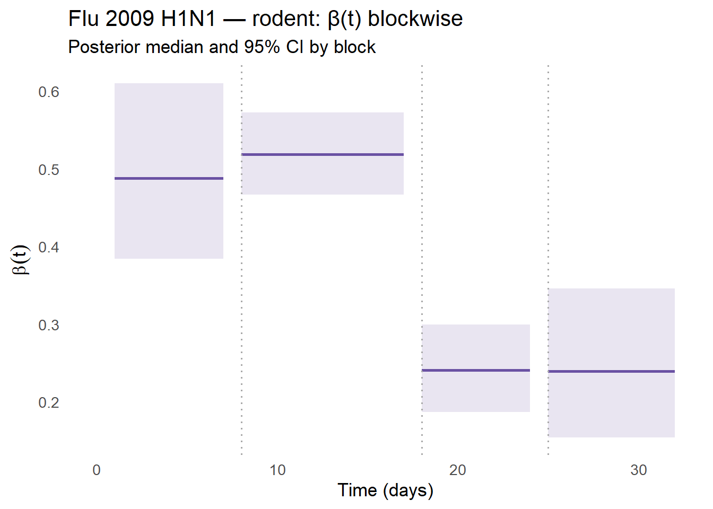
# P12: rodent Rt(t) vs EpiEstim NP stacked two-panel
p_flu_two_panel <- p_flu_rt / p_flu_epi_np +
plot_annotation(
title = "Flu 2009 H1N1 — Rt comparison",
subtitle = "Top: rodent | Bottom: EpiEstim non-parametric SI",
theme = theme(plot.title = element_text(size = 14, face = "bold"),
plot.subtitle = element_text(size = 9, color = "grey40"))
)
print(p_flu_two_panel)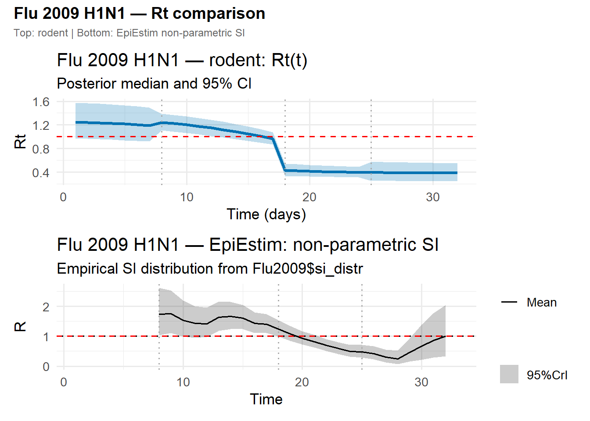
# P13: beta(t) and S(t) stacked
p_flu_beta_S <- p_flu_beta / p_flu_S +
plot_annotation(
title = "Flu 2009 H1N1 — β(t) and S(t)",
subtitle = "Top: β(t) block posterior | Bottom: S(t) trajectory",
theme = theme(plot.title = element_text(size = 14, face = "bold"),
plot.subtitle = element_text(size = 9, color = "grey40"))
)
print(p_flu_beta_S)Warning: Removed 1 row containing missing values or values outside the scale range
(`geom_segment()`).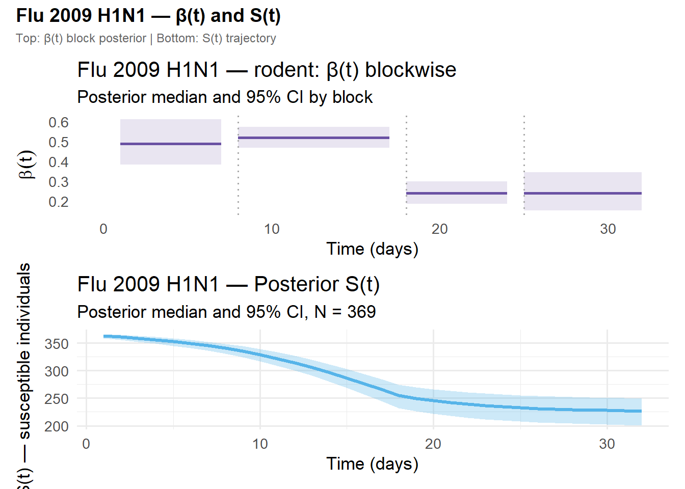
# Numeric summaries
print_Rt_comparison(df_epi_flu_param, df_rod_flu, "FLU 2009 (parametric SI)")
===== FLU 2009 (parametric SI) — Rt COMPARISON =====
Block 1 (days 2-7):
EpiEstim : 2.04 [1.14, 3.19]
rodent : NaN [NA, NA]
Block 2 (days 8-17):
EpiEstim : 1.37 [1.09, 1.67]
rodent : 1.23 [0.94, 1.54]
Block 3 (days 18-24):
EpiEstim : 0.50 [0.32, 0.71]
rodent : 1.12 [0.92, 1.33]
Block 4 (days 25-32):
EpiEstim : 0.75 [0.24, 1.53]
rodent : 0.41 [0.32, 0.52]print_Rt_comparison(df_epi_flu_np, df_rod_flu, "FLU 2009 (non-parametric SI)")
===== FLU 2009 (non-parametric SI) — Rt COMPARISON =====
Block 1 (days 2-7):
EpiEstim : 2.04 [1.14, 3.19]
rodent : NaN [NA, NA]
Block 2 (days 8-17):
EpiEstim : 1.37 [1.09, 1.67]
rodent : 1.23 [0.94, 1.54]
Block 3 (days 18-24):
EpiEstim : 0.50 [0.32, 0.71]
rodent : 1.12 [0.92, 1.33]
Block 4 (days 25-32):
EpiEstim : 0.75 [0.24, 1.54]
rodent : 0.41 [0.32, 0.52]# ============================================================
# DATASET 2: EBOLA SIERRA LEONE 2014
# ============================================================
data(ebola_sierraleone_2014)
ebola_daily <- ebola_sierraleone_2014 %>%
filter(!is.na(date_of_onset)) %>%
group_by(date_of_onset) %>%
summarise(cases = n(), .groups = "drop") %>%
arrange(date_of_onset) %>%
mutate(time = row_number()) %>%
select(time, cases) %>%
as.data.frame()
ebola_vlines <- c(100, 180, 240)
Tmax_ebola <- nrow(ebola_daily)
cat("=== EBOLA SIERRA LEONE 2014 ===\n")=== EBOLA SIERRA LEONE 2014 ===cat("Total cases:", sum(ebola_daily$cases), "\n")Total cases: 11903 cat("Peak daily cases:", max(ebola_daily$cases), "\n")Peak daily cases: 117 cat("Day of peak:", which.max(ebola_daily$cases), "\n")Day of peak: 153 cat("Total days:", Tmax_ebola, "\n\n")Total days: 480 # --- Fit rodent ---
ebola_out <- estimate_R_blocks(
data = ebola_daily,
N = 8600000,
gamma = 0.1, # ~10-day infectious period for Ebola
beta_breaks = c(1, 100, 180, 240),
priors = list(mean_beta = log(0.2), sd_beta = 1.0,
rw_sd_beta = 0.3, mean_I0 = log(5), sd_I0 = 0.5),
inits = list(beta = 0.2, I0 = 5),
mcmc = list(n_steps = 15000, burnin = 0.5, seed = 444, n_chains = 3)
)ℹ Using cached generator⡀⠀ Sampling [▁▁▁] ■ | 0% ETA: 5m⠄⠀ Sampling [▁▁▁] ■ | 1% ETA: 2m⢂⠀ Sampling [▁▁▁] ■■ | 3% ETA: 2m⡂⠀ Sampling [▂▁▁] ■■■ | 6% ETA: 2m⠅⠀ Sampling [▂▁▁] ■■■■ | 9% ETA: 2m⢃⠀ Sampling [▃▁▁] ■■■■ | 12% ETA: 2m⡃⠀ Sampling [▄▁▁] ■■■■■ | 14% ETA: 2m⠍⠀ Sampling [▄▁▁] ■■■■■■ | 17% ETA: 1m⢋⠀ Sampling [▅▁▁] ■■■■■■■ | 20% ETA: 1m⡋⠀ Sampling [▅▁▁] ■■■■■■■■ | 23% ETA: 1m⠍⠁ Sampling [▆▁▁] ■■■■■■■■■ | 25% ETA: 1m⢋⠁ Sampling [▆▁▁] ■■■■■■■■■ | 28% ETA: 1m⡋⠁ Sampling [▇▁▁] ■■■■■■■■■■ | 31% ETA: 1m⠍⠉ Sampling [▇▁▁] ■■■■■■■■■■■ | 33% ETA: 1m⠋⠉ Sampling [█▁▁] ■■■■■■■■■■■■ | 36% ETA: 1m⠋⠉ Sampling [█▂▁] ■■■■■■■■■■■■■ | 39% ETA: 1m⠉⠙ Sampling [█▂▁] ■■■■■■■■■■■■■■ | 42% ETA: 1m⠉⠙ Sampling [█▃▁] ■■■■■■■■■■■■■■ | 45% ETA: 1m⠉⠩ Sampling [█▃▁] ■■■■■■■■■■■■■■■ | 47% ETA: 1m⠈⢙ Sampling [█▄▁] ■■■■■■■■■■■■■■■■ | 50% ETA: 1m⠈⡙ Sampling [█▅▁] ■■■■■■■■■■■■■■■■■ | 53% ETA: 1m⢈⠩ Sampling [█▅▁] ■■■■■■■■■■■■■■■■■■ | 55% ETA: 49s⡀⢙ Sampling [█▆▁] ■■■■■■■■■■■■■■■■■■ | 58% ETA: 46s⠄⡙ Sampling [█▆▁] ■■■■■■■■■■■■■■■■■■■ | 61% ETA: 43s⢂⠩ Sampling [█▇▁] ■■■■■■■■■■■■■■■■■■■■ | 63% ETA: 40s⡂⢘ Sampling [█▇▁] ■■■■■■■■■■■■■■■■■■■■■ | 66% ETA: 37s⠅⡘ Sampling [██▁] ■■■■■■■■■■■■■■■■■■■■■■ | 69% ETA: 35s⢃⠨ Sampling [██▁] ■■■■■■■■■■■■■■■■■■■■■■ | 71% ETA: 33s⡃⢐ Sampling [██▂] ■■■■■■■■■■■■■■■■■■■■■■■ | 73% ETA: 30s⠍⡐ Sampling [██▃] ■■■■■■■■■■■■■■■■■■■■■■■■ | 76% ETA: 26s⢋⠠ Sampling [██▃] ■■■■■■■■■■■■■■■■■■■■■■■■■ | 79% ETA: 23s⡋⢀ Sampling [██▄] ■■■■■■■■■■■■■■■■■■■■■■■■■■ | 82% ETA: 20s⠍⡁ Sampling [██▄] ■■■■■■■■■■■■■■■■■■■■■■■■■■ | 84% ETA: 17s⢋⠁ Sampling [██▅] ■■■■■■■■■■■■■■■■■■■■■■■■■■■ | 87% ETA: 14s⡋⠁ Sampling [██▅] ■■■■■■■■■■■■■■■■■■■■■■■■■■■■ | 90% ETA: 11s⠍⠉ Sampling [██▆] ■■■■■■■■■■■■■■■■■■■■■■■■■■■■■ | 92% ETA: 9s⠋⠉ Sampling [██▆] ■■■■■■■■■■■■■■■■■■■■■■■■■■■■■ | 95% ETA: 6s⠋⠉ Sampling [██▇] ■■■■■■■■■■■■■■■■■■■■■■■■■■■■■■ | 97% ETA: 3s✔ Sampled 45000 steps across 3 chains in 1m 51.9s# --- rodent outputs ---
ebola_blocks <- block_Rt(ebola_out$Rt_mat, ebola_out$beta_times,
ebola_daily$time)
# --- EpiEstim ---
ebola_epi <- ebola_daily %>% rename(I = cases)
res_ebola_sliding_7d <- estimate_R(
incid = ebola_epi, method = "parametric_si",
config = make_config(list(
mean_si = 14.2, std_si = 9.6,
t_start = seq(2, Tmax_ebola - 6),
t_end = seq(2, Tmax_ebola - 6) + 6
))
)
res_ebola_sliding_14d <- estimate_R(
incid = ebola_epi, method = "parametric_si",
config = make_config(list(
mean_si = 14.2, std_si = 9.6,
t_start = seq(2, Tmax_ebola - 13),
t_end = seq(2, Tmax_ebola - 13) + 13
))
)
res_ebola_blocks <- estimate_R(
incid = ebola_epi, method = "parametric_si",
config = make_config(list(
mean_si = 14.2, std_si = 9.6,
t_start = c(2, 100, 180, 240),
t_end = c(99, 179, 239, Tmax_ebola)
))
)
df_epi_ebola <- res_ebola_blocks$R %>%
transmute(t_start, t_end, Mean = `Mean(R)`,
Lower = `Quantile.0.025(R)`, Upper = `Quantile.0.975(R)`)
df_rod_ebola <- ebola_blocks %>%
transmute(t_start, t_end, Mean, Lower, Upper)
# ============================================================
# EBOLA PLOTS — individual
# ============================================================
# P1: Incidence
p_ebola_incid <- ggplot(ebola_daily, aes(time, cases)) +
geom_col(fill = "#56B4E9", alpha = 0.8) +
geom_vline(xintercept = ebola_vlines, linetype = "dotted",
color = "darkgrey", linewidth = 0.7) +
annotate("text", x = ebola_vlines + 1,
y = rep(max(ebola_daily$cases) * 0.93, 3),
label = c("1", "2", "3"), hjust = 0, size = 3, color = "darkgrey") +
labs(x = "Time (days)", y = "Daily cases",
title = "Ebola Sierra Leone 2014 — Daily Incidence",
subtitle = "Date of symptom onset, N = 8,600,000") +
theme_minimal(base_size = 13)
print(p_ebola_incid)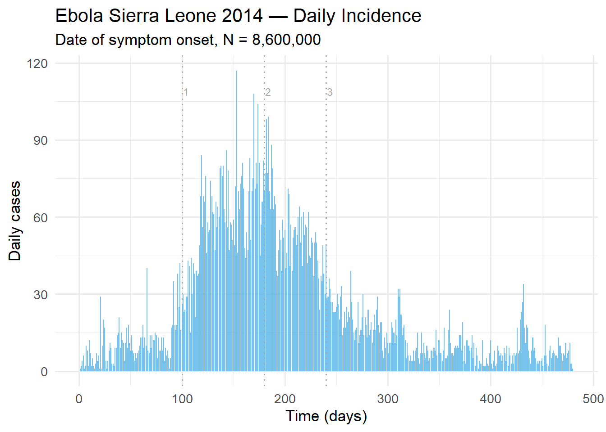
# P2: rodent smooth Rt(t)
p_ebola_rt <- plot_Rt(ebola_out, "Ebola Sierra Leone 2014 — rodent: Rt(t)",
ebola_vlines) +
scale_y_continuous(limits = c(0, 5))
print(p_ebola_rt)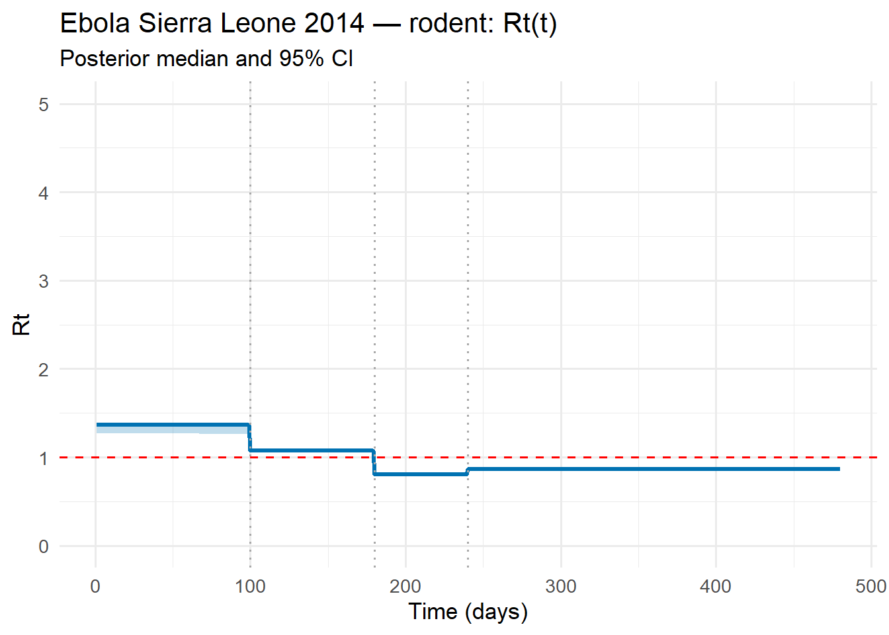
# P3: rodent block Rt
p_ebola_blocks <- plot_block_Rt(ebola_blocks, "Ebola Sierra Leone 2014",
ebola_vlines)
print(p_ebola_blocks)Warning: Removed 1 row containing missing values or values outside the scale range
(`geom_segment()`).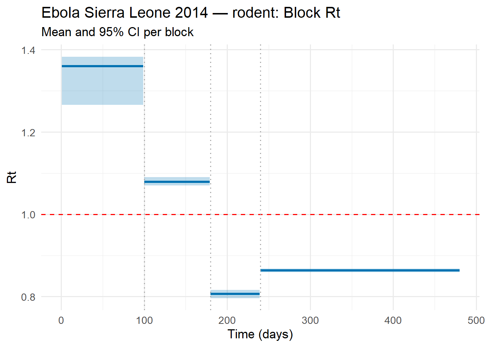
# P4: EpiEstim 7-day sliding
p_ebola_epi_7d <- plot(res_ebola_sliding_7d, "R") +
geom_hline(yintercept = 1, linetype = 2, color = "red") +
geom_vline(xintercept = ebola_vlines, linetype = "dotted",
color = "darkgrey", linewidth = 0.7) +
labs(title = "Ebola Sierra Leone 2014 — EpiEstim: 7-day sliding Rt",
subtitle = "SI: mean = 14.2d, sd = 9.6d (window < SI mean — volatile)") +
theme_minimal(base_size = 13) +
scale_y_continuous(limits = c(0, 5))Scale for y is already present.
Adding another scale for y, which will replace the existing scale.print(p_ebola_epi_7d)Warning: Removed 7 rows containing missing values or values outside the scale range
(`geom_ribbon()`).Warning: Removed 7 rows containing missing values or values outside the scale range
(`geom_line()`).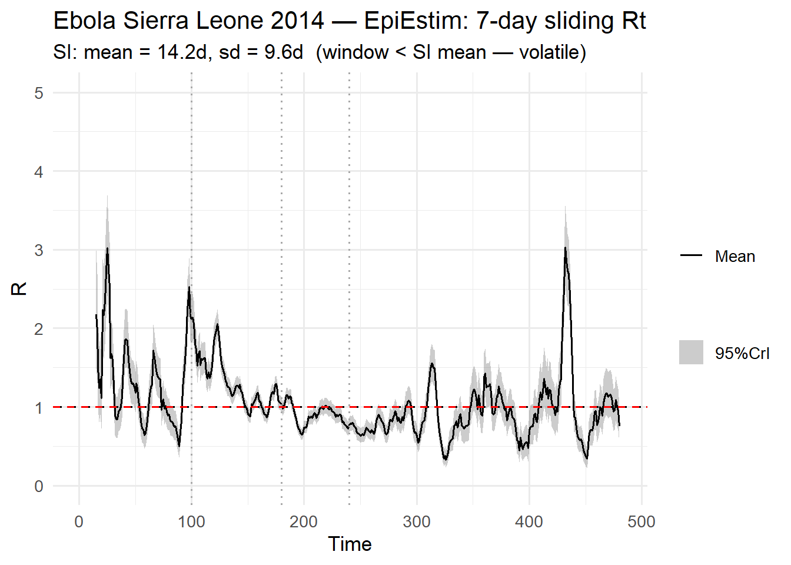
# P5: EpiEstim 14-day sliding
p_ebola_epi_14d <- plot(res_ebola_sliding_14d, "R") +
geom_hline(yintercept = 1, linetype = 2, color = "red") +
geom_vline(xintercept = ebola_vlines, linetype = "dotted",
color = "darkgrey", linewidth = 0.7) +
labs(title = "Ebola Sierra Leone 2014 — EpiEstim: 14-day sliding Rt",
subtitle = "SI: mean = 14.2d, sd = 9.6d (window ≥ SI mean — stable)") +
theme_minimal(base_size = 13) +
scale_y_continuous(limits = c(0, 5))Scale for y is already present.
Adding another scale for y, which will replace the existing scale.print(p_ebola_epi_14d)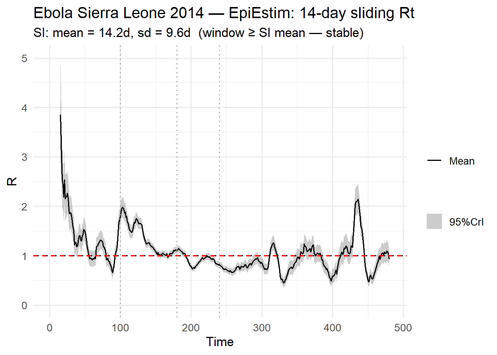
# P6: EpiEstim block windows
p_ebola_epi_blocks <- plot(res_ebola_blocks, "R") +
geom_hline(yintercept = 1, linetype = 2, color = "red") +
labs(title = "Ebola Sierra Leone 2014 — EpiEstim: block windows",
subtitle = "Blocks: 1-99, 100-179, 180-239, 240-end") +
theme_minimal(base_size = 13)
print(p_ebola_epi_blocks)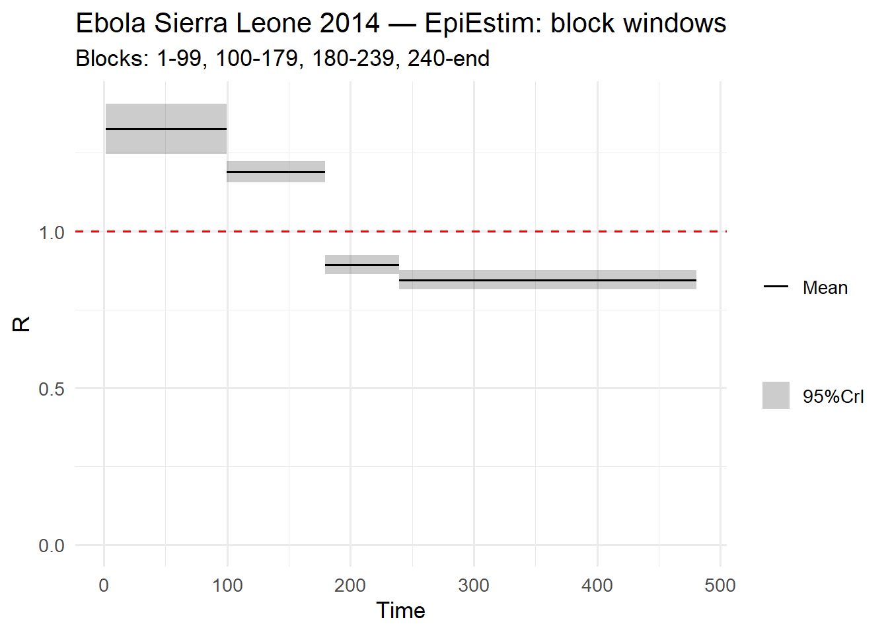
# P7: rodent vs EpiEstim block comparison
p_ebola_compare <- make_comparison_plot(df_epi_ebola, df_rod_ebola,
ebola_vlines, "Ebola Sierra Leone 2014")
print(p_ebola_compare)Warning: Removed 1 row containing missing values or values outside the scale range
(`geom_segment()`).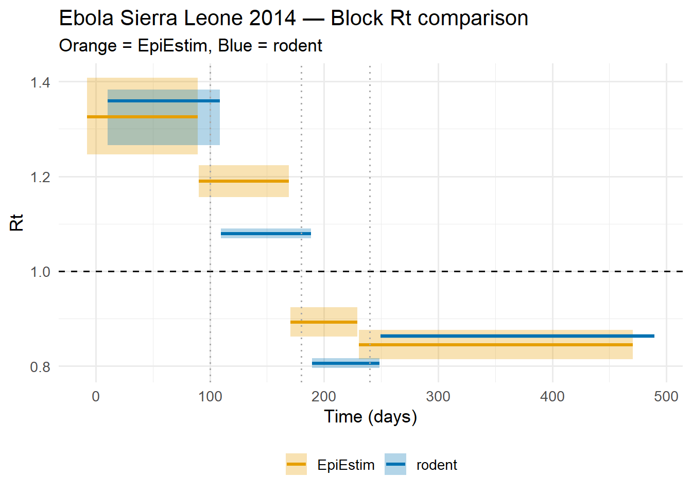
# P8: S(t)
p_ebola_S <- plot_S_trajectory(ebola_out, N = 8600000,
"Ebola Sierra Leone 2014")
print(p_ebola_S)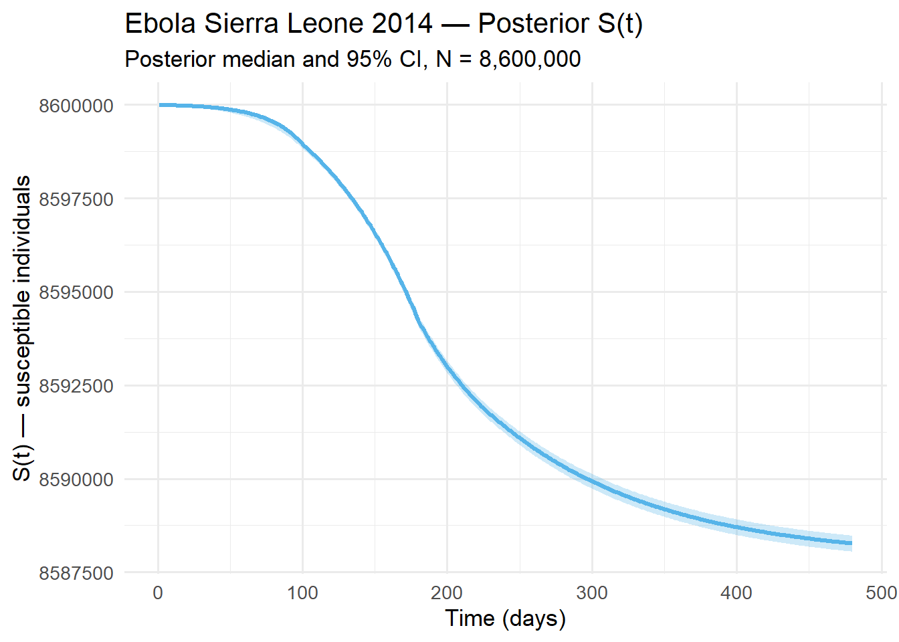
# P9: beta(t) blocks
p_ebola_beta <- plot_beta_blocks(ebola_out, ebola_vlines,
"Ebola Sierra Leone 2014")
print(p_ebola_beta)Warning: Removed 1 row containing missing values or values outside the scale range
(`geom_segment()`).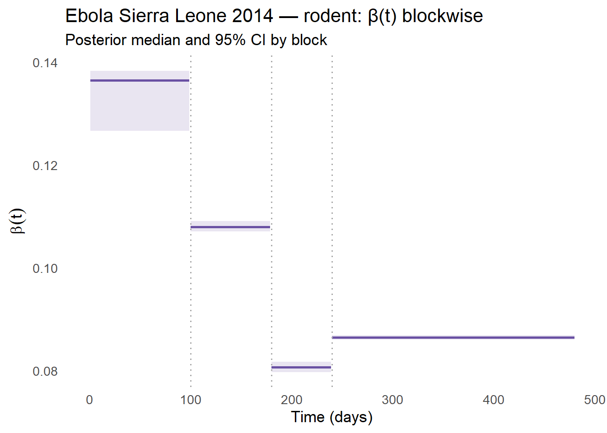
# P10: rodent Rt(t) vs EpiEstim 14-day stacked two-panel
p_ebola_two_panel <- p_ebola_rt / p_ebola_epi_14d +
plot_annotation(
title = "Ebola Sierra Leone 2014 — Rt comparison",
subtitle = "Top: rodent | Bottom: EpiEstim 14-day sliding",
theme = theme(plot.title = element_text(size = 14, face = "bold"),
plot.subtitle = element_text(size = 9, color = "grey40"))
)
print(p_ebola_two_panel)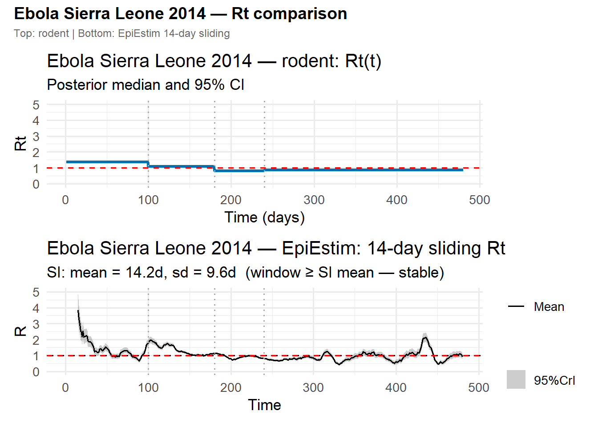
# P11: beta(t) and S(t) stacked
p_ebola_beta_S <- p_ebola_beta / p_ebola_S +
plot_annotation(
title = "Ebola Sierra Leone 2014 — β(t) and S(t)",
subtitle = "Top: β(t) block posterior | Bottom: S(t) trajectory",
theme = theme(plot.title = element_text(size = 14, face = "bold"),
plot.subtitle = element_text(size = 9, color = "grey40"))
)
print(p_ebola_beta_S)Warning: Removed 1 row containing missing values or values outside the scale range
(`geom_segment()`).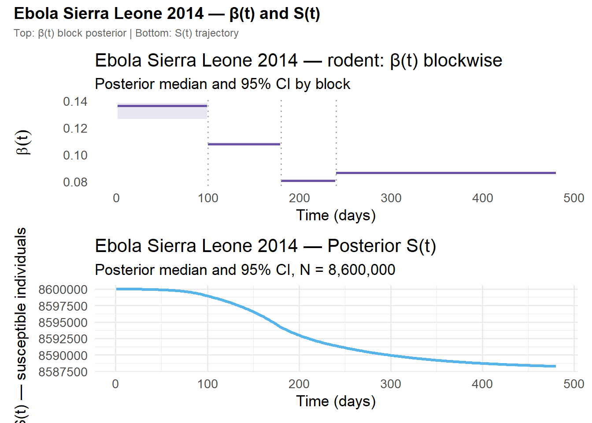
# P12: Main 2x3 grid
ebola_grid <- (p_ebola_incid | p_ebola_rt | p_ebola_epi_7d) /
(p_ebola_epi_14d | p_ebola_compare | p_ebola_S) +
plot_annotation(
title = "Ebola Sierra Leone 2014",
subtitle = paste("Top: incidence, rodent Rt(t), EpiEstim 7-day (volatile)",
"| Bottom: EpiEstim 14-day (stable), block comparison, S(t)"),
theme = theme(plot.title = element_text(size = 15, face = "bold"),
plot.subtitle = element_text(size = 9, color = "grey40"))
)
print(ebola_grid)Warning: Removed 7 rows containing missing values or values outside the scale range
(`geom_ribbon()`).
Removed 7 rows containing missing values or values outside the scale range
(`geom_line()`).Warning: Removed 1 row containing missing values or values outside the scale range
(`geom_segment()`).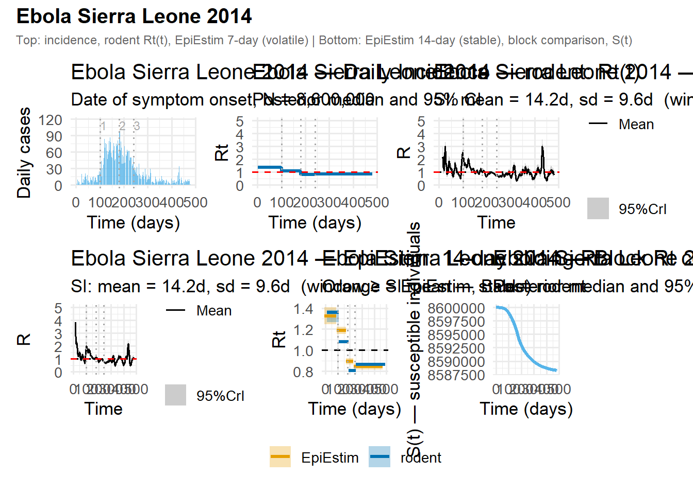
# P13: Alternate grid with beta panel
ebola_grid_beta <- (p_ebola_incid | p_ebola_rt | p_ebola_epi_14d) /
(p_ebola_beta | p_ebola_compare | p_ebola_S) +
plot_annotation(
title = "Ebola Sierra Leone 2014 — extended view",
subtitle = paste("Top: incidence, rodent Rt(t), EpiEstim 14-day",
"| Bottom: β(t) blocks, block comparison, S(t)"),
theme = theme(plot.title = element_text(size = 15, face = "bold"),
plot.subtitle = element_text(size = 9, color = "grey40"))
)
print(ebola_grid_beta)Warning: Removed 1 row containing missing values or values outside the scale range
(`geom_segment()`).
Removed 1 row containing missing values or values outside the scale range
(`geom_segment()`).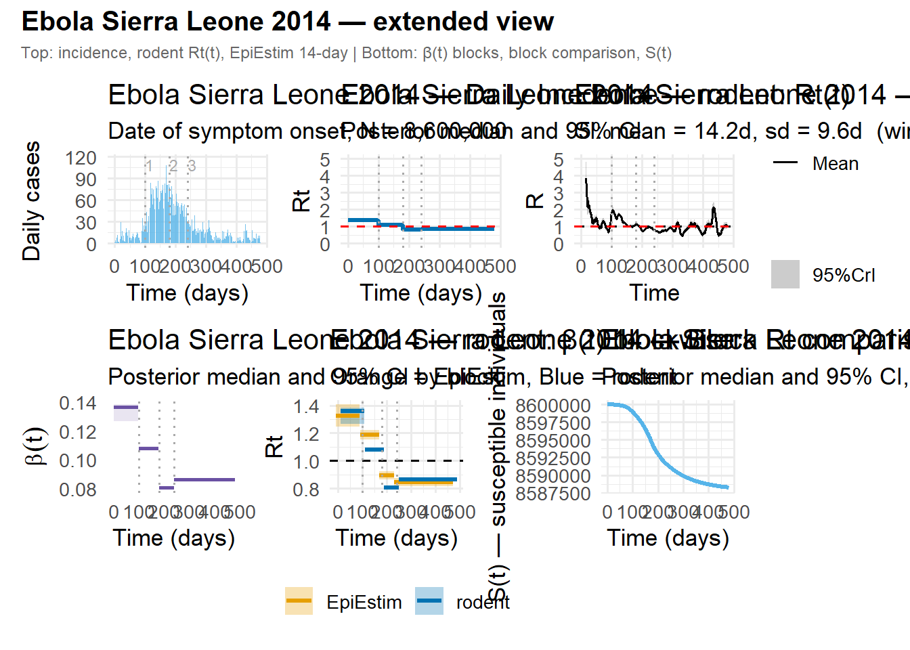
# Numeric summaries
print_Rt_comparison(df_epi_ebola, df_rod_ebola, "EBOLA SIERRA LEONE 2014")
===== EBOLA SIERRA LEONE 2014 — Rt COMPARISON =====
Block 1 (days 2-99):
EpiEstim : 1.33 [1.25, 1.41]
rodent : NaN [NA, NA]
Block 2 (days 100-179):
EpiEstim : 1.19 [1.16, 1.22]
rodent : 1.36 [1.27, 1.38]
Block 3 (days 180-239):
EpiEstim : 0.89 [0.86, 0.92]
rodent : 1.08 [1.07, 1.09]
Block 4 (days 240-480):
EpiEstim : 0.84 [0.81, 0.88]
rodent : 0.81 [0.80, 0.82]